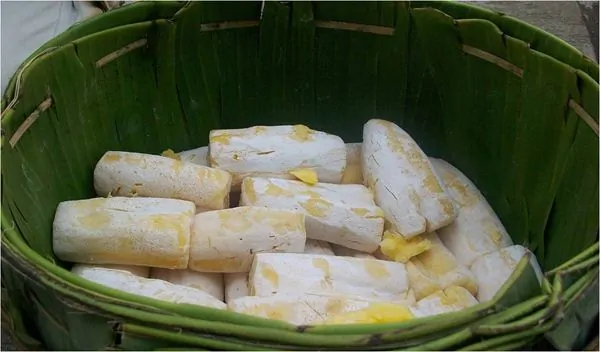
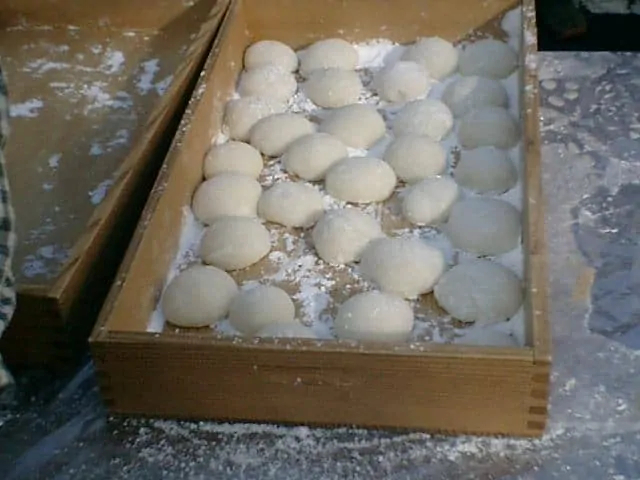

Nasi Tutug Oncom |
Empal Gentong |
|
Nasi tutug oncom merupakan hidangan berupa nasi hangat yang dicampur
dengan oncom bakar, telur dadar, sambal terasi, lalapan, ikan asin dan
taburan bawang goreng. Nasi tutug oncom berasal dari Jawa Barat,
tepatnya dari Tasikmalaya. Mengenai asal usulnya, olahan nasi yang satu ini belum diketahui pasti. Namun, nasi tutug oncom selalu disajikan sejak turun temurun. Bahkan nasi tutug oncom ini sudah menjadi makanan yang wajib bagi orang Sunda sejak zaman dahulu. Sejak tahun 1904, olahan nasi nusantara ini selalu dijadikan sebagai menu sarapan. Pada saat itu, awalnya oncom hanya dibakar dan ditambah garam sebagai bumbu. Oncom itu kemudian jadi lauk saat makan nasi hangat. |
Empal Gentong adalah makanan timur tengah yang dibawa ke Cirebon dan
diadaptasikan dengan cita rasa Cirebon oleh para pendatang dari Arab
dan sultan-sultan terdahulu hingga akhirnya Empal Gentong menjadi ciri
khas makanan di Cirebon. Dinamakan Empal Gentong karena selama proses memasaknya menggunakan gentong, yakni periuk yang terbuat dari tanah liat. Sehingga, digunakanlah gentong sebagai wadah untuk merebus seluruh bahan. Ciri khas lain dari proses pembuatan Empal Gentong yakni bahan bakar yang digunakan adalah kayu bakar. Hal tersebut bertujuan untuk mempertahankan cita rasa yang sudah dibangun dari para pembuat Empal Gentong sebelumnya. |
Peuyeum Bandung |
Mochi Sukabumi |
|  |  |
|
Peuyeum Bandung merupakan salah satu kuliner khas yang ada di Kota dan
Kabupaten Bandung. Nama kuliner ini terdiri dari dua kata, yaitu
«Peuyeum» atau dalam bahasa Indonesia artinya tapai singkong.
“Bandung” merupakan nama kota tempat produksi peuyeum tersebut, yaitu
Kabupaten Bandung. Peuyeum berasal dari olahan singkong atau tapai yang difermentasi cukup lama menggunakan bahan ragi. Keberadaan kuliner tradisional peuyeum di Bandung yaitu dari Kecamatan Cimenyan. Singkong sebagai dasar pembuatan peuyeum memang sejak zaman penjajahan sudah dikenal oleh masyarakat Bandung sebagai pengganti nasi yang kala itu sangat sulit diperoleh. Dari hasil olahan tersebut kemudian menghasilkan kuliner yang dikenal dengan nama peuyeum. Kualitas singkong yang diproses sedemikian rupa membuat peuyeum Cimenyan dikenal dengan kelezatannya tidak saja oleh warga sekitar tetapi juga sudah sudah meluas hingga ke Kota Bandung dan beberapa kota di Provinsi Jawa Barat. |
Mochi mulai terkenal pertama oleh sebuah toko usaha pertama bernama
“Mochi Garuda”, lebih tepatnya berdiri sejak tahun 70’an dan terletak
di Sukabumi. Keluarga Gandhi disebut-sebut sebagai pembuat mochi pertama. Tentu kalian masih ingat bahwa ada kertas bertuliskan bahasa cina di atas mochi. Nah, sejak saat itu mochi dikenal sebagai nama dari makanan yang dibuat oleh keluarga Gandhi. Namun, banyak yang mengatakan bahwa mochi dari Sukabumi sudah terjadi sejak masa lampau. Tan menjadi pembuat mochi pertama. Kondisi perekonomian Sukabumi saat itu kurang baik ditambah memang kemampuan ekonomi Ny. Tan dan keluarga saat itu sama tidak baiknya, membuatnya tidak bisa memproduksi mochi secara besar. Hal kesulitan mendapatkan tempat tinggal dan terjadinya kasus penjarahan dan pembakaran atas beberapa orang etnis Thionghoa menuntut keluarga pindah ke daerah Jalan Otista, Sukabumi. Dari situlah mengapa banyak mochi ditemukan di jalan tersebut dan tentu saja kamu dengan mudahnya menemukan makanan mochi sebagai oleh-oleh khas Sukabumi. |